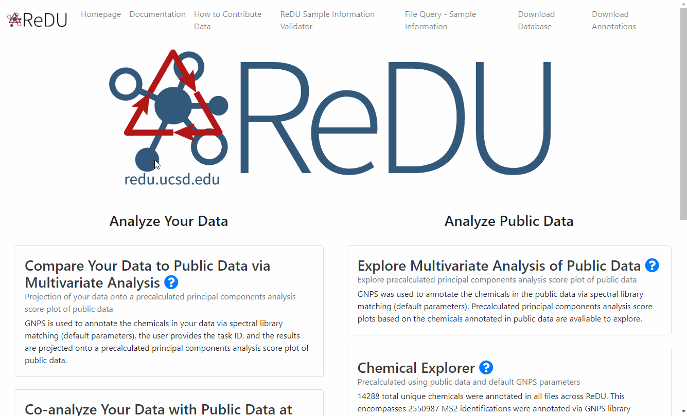

Annotation via MS/MS Spectral Library Search
Re-analysis of Public Data via Library Search at GNPS
Summary
A GNPS library search has been performed for all files with sample information in GNPS using default parameters (found here). This option allows users to reanalyze the public data via custom library search parameters. The library search results are displayed on GNPS which includes the option of downloading a table with every chemical annotation versus the files it was detected in (cells of the matrix reflect detected, 1, or not detected, 0). Further documentation on GNPS library search is located here.
Notes
- a library search has been done with all files in ReDU (pending updates for recently contributed data) with default GNPS paramers.
- You must have an account at GNPS and be signed in prior to launching a job.
- If you are not logged in, it will prompt you to login. Login, then close the tab and click the set up button again on the ReDU tab.
- All files must be added to Group 1 (G1); there is no support for multiple groups for library search.
- The suggested limit for GNPS library search is a total of 5000 files.
Example Use Cases
- Annotate chemicals in the public data via spectral library matching using custom parameters. Used for generating a list of annotations based on custom parameters for the files included. All files must be in G1.
Tutorial
- Log into a GNPS account.
- Navigate to the ReDU homepage.
- Click on the "Re-analyze Public Data at GNPS" text.
- Select the files you wish to include in the re-analysis by clicking Group 1 (G1)
- The orange buttons in the center of the screen correspond to Sample Information categories.
- If filter/s are used, they will appear as red box/boxes in the Attribute Filters Panel (upper-right corner) of the page. To remove already selected filters click on the red boxed filter you wish to remove and the item should disappear from Attribute Filters Panel.
- When files are selected into a group the corresponding button becomes red and the number of files is updated in the Selection Summary Panel (upper-left corner).
- Click on the Set Up Re-Analysis with GNPS Library Search button (blue) at the bottom of the page.
- Launch the library search job with default parameters or customize parameters. Further documentation on GNPS library search is located here.
Co-analysis of Public Data via Library Search at GNPS
Summary
A GNPS library search has been performed for all files with sample information in GNPS using default parameters (found here). This option allows users to reanalyze the public data via custom library search parameters. The library search results are displayed on GNPS which includes the option of downloading a table with every chemical annotation versus the files it was detected in (cells of the matrix reflect detected, 1, or not detected, 0). Further documentation on GNPS library search is located here.
Notes
- You must have an account at GNPS and be signed in prior to launching a job.
- If you are not logged in, it will prompt you to login. Login, then close the tab and click the set up button again on the ReDU tab.
- All files must be added to Group 1 (G1); there is no support for multiple groups for library search.
- The suggested limit for GNPS library search is a total of 5000 files.
Example Use Cases
- Annotate chemicals in your data as well as public data via spectral library matching using custom parameters. Used for generating a list of annotations based on custom parameters for your files and public files included for further analysis. All files must be in G1.
Tutorial
- Log into a GNPS account.
- Navigate to the ReDU homepage.
- Click on the "Co-analyze Public Data at GNPS" text.
- Select the files you wish to include in the re-analysis by clicking Group 1 (G1)
- The orange buttons in the center of the screen correspond to Sample Information categories.
- If filter/s are used, they will appear as red box/boxes in the Attribute Filters Panel (upper-right corner) of the page. To remove already selected filters click on the red boxed filter you wish to remove and the item should disappear from Attribute Filters Panel.
- When files are selected into a group the corresponding button becomes red and the number of files is updated in the Selection Summary Panel (upper-left corner).
- Click on the Set Up Co-Analysis with GNPS Library Search button (blue) at the bottom of the page. 
- Add your data to Group 1 (G1)
- Launch the library search job with default parameters or customize parameters. Further documentation on GNPS library search is located here.